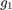
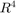
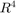
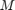
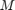

elements.
elements.This document will show some features of RepLAB.
Before trying any of the RepLAB commands, we must first add the paths:
replab_addpaths
Warning: The MOcov library was not found in the folder /home/denis/w/replab/external/MOcov Did you run 'git submodule init' and 'git submodule update'? It will not be possible to run the tests. Warning: YALMIP was not found in the path, some functionalities of the library might be disabled
RepLAB decomposes representations of permutation groups; this does not lose generality as all finite groups can be represented by permutation groups.
We construct the symmetric group acting on elements.
n = 4;
The symmetric group is generated by a cyclic permutation :
g1 = [2:n 1];
and one transposition  :
:
g2 = [2 1 3:n];
Remark that permutations in RepLAB are simply row vectors of images. We use the convention that permutations act on indices  *on the left*, thus the image of 3 under is compatible with MATLAB syntax:
*on the left*, thus the image of 3 under is compatible with MATLAB syntax:
g2(3)
ans =
3
We construct the group by first accessing the group of permutations on 4 elements, then constructing a subgroup
S4 = replab.Permutations(4).subgroup({g1 g2})
S4 =
replab.perm.PermutationBSGSGroup instance with six fields:
action: replab.perm.PermutationNaturalAction
description: 'replab.perm.PermutationBSGSGroup instance'
domainSize: 4
identity: [1, 2, 3, 4]
generator(1): [2, 3, 4, 1]
generator(2): [2, 1, 3, 4]
noting that the generators of the group are named  ,
,  ,...
,...
We can perform a few operations on finite groups. Let be a random permutation, which we can obtain in (mostly) equivalent ways by either
g = randperm(n); g = S4.sample; g = S4.sampleUniformly;
But for the example, we fix the random sample.
g = [3 2 4 1]
g =
3 2 4 1
We can factor the last in the group generators:
w = S4.factorization(g)
w = a b
to obtain a word in the generators and . We evaluate back this word:
g1 = S4.evaluateWord(w)
g1 =
3 2 4 1
to obtain back .
We can also compute the group order or enumerate the elements of the group
S4.order
ans =
24
S4.elements
ans =
replab.EnumeratorFun instance with four fields:
atFun: function_handle
description: 'replab.EnumeratorFun instance'
findFun: function_handle
size: 24
a technique that works even for big groups.
S30 = replab.Permutations(30).subgroup({[2:30 1] [2 1 3:30]})
S30.order
S30 =
replab.perm.PermutationBSGSGroup instance with six fields:
action: replab.perm.PermutationNaturalAction
description: 'replab.perm.PermutationBSGSGroup instance'
domainSize: 30
identity: 1 x 30 double
generator(1): 1 x 30 double
generator(2): 1 x 30 double
ans =
265252859812191058636308480000000
S30.elements
ans =
replab.EnumeratorFun instance with four fields:
atFun: function_handle
description: 'replab.EnumeratorFun instance'
findFun: function_handle
size: 265252859812191058636308480000000
The natural representation of  simply permutes the coordinates of :
simply permutes the coordinates of :
rho = S4.naturalRepresentation
rho =
replab.RealRep instance with eight fields:
U: []
Uinv: []
description: 'replab.RealRep instance'
dimension: 4
group: replab.perm.PermutationBSGSGroup
parent: []
images(1): [0, 0, 0, 1; 1, 0, 0, 0; 0, 1, 0, 0; 0, 0, 1, 0]
images(2): [0, 1, 0, 0; 1, 0, 0, 0; 0, 0, 1, 0; 0, 0, 0, 1]
We take two elements of :
g = [2 3 1 4] h = [2 1 4 3]
g =
2 3 1 4
h =
2 1 4 3
and their composition
gh = g(h)
gh =
3 2 4 1
and verify that we have a representation of the group
rho.image(g) * rho.image(h) rho.image(gh)
ans =
0 0 0 1
0 1 0 0
1 0 0 0
0 0 1 0
ans =
0 0 0 1
0 1 0 0
1 0 0 0
0 0 1 0
We can also define representations from their images. Here, we define the sign representation (using a permutation representation of it!).
dim = 2;
rho1 = S4.realRepresentation(dim, {[0 1; 1 0] [0 1; 1 0]})
rho2 = S4.permutationRepresentation(2, {[2 1] [2 1]})
rho1 =
replab.RealRep instance with eight fields:
U: []
Uinv: []
description: 'replab.RealRep instance'
dimension: 2
group: replab.perm.PermutationBSGSGroup
parent: []
images(1): [0, 1; 1, 0]
images(2): [0, 1; 1, 0]
rho2 =
replab.RealRep instance with eight fields:
U: []
Uinv: []
description: 'replab.RealRep instance'
dimension: 2
group: replab.perm.PermutationBSGSGroup
parent: []
images(1): [0, 1; 1, 0]
images(2): [0, 1; 1, 0]
rho1.image(g) rho2.image(g)
ans =
1 0
0 1
ans =
1 0
0 1
RepLAB provides the irreducible decomposition of representations over the real numbers, identifying the representation type (real, complex or quaternionic):
rho.irreducible
ans =
replab.RealDecompositionRep instance with nine fields:
U: 4 x 4 double
Uinv: 4 x 4 double
components: {replab.RealIrrep, replab.RealIrrep}
description: 'replab.RealDecompositionRep instance'
dimension: 4
group: replab.perm.PermutationBSGSGroup
parent: replab.RealRep
images(1): [1, 0, 0, 0; 0, -0.20282, -0.93001, 0.30649; 0, 0.38686, -0.36364, -0.84741; 0, -0.89956, 0.053303, -0.4...
images(2): [1, 0, 0, 0; 0, 0.87936, 0.41891, 0.22639; 0, 0.41891, -0.45455, -0.78607; 0, 0.22639, -0.78607, 0.57519]
We can get subrepresentations
subrho1 = rho.irreducible.component(1)
subrho1 =
replab.RealIrrep instance with 13 fields:
U: [-0.5, -0.5, -0.5, -0.5]
Uinv: [-0.5, -0.5, -0.5, -0.5]
description: 'replab.RealIrrep instance'
dimension: 1
dimension1: 1
divisionAlgebra: replab.DivisionAlgebra
group: replab.perm.PermutationBSGSGroup
images1: {1, 1}
imagesInv1: {1, 1}
multiplicity: 1
parent: replab.RealRep
images(1): 1
images(2): 1
subrho2 = rho.irreducible.component(2)
subrho2 =
replab.RealIrrep instance with 13 fields:
U: [-0.37421, 0.34191, 0.70219; -0.026867, -0.86414, 0.050415; 0.82456, 0.26112, -0.04375; -0.42349, 0....
Uinv: 3 x 4 double
description: 'replab.RealIrrep instance'
dimension: 3
dimension1: 3
divisionAlgebra: replab.DivisionAlgebra
group: replab.perm.PermutationBSGSGroup
images1: 1 x 2 cell
imagesInv1: 1 x 2 cell
multiplicity: 1
parent: replab.RealRep
images(1): [-0.20282, -0.93001, 0.30649; 0.38686, -0.36364, -0.84741; -0.89956, 0.053303, -0.43354]
images(2): [0.87936, 0.41891, 0.22639; 0.41891, -0.45455, -0.78607; 0.22639, -0.78607, 0.57519]
with their bases:
subrho1.U subrho2.U
ans =
-0.5000
-0.5000
-0.5000
-0.5000
ans =
-0.3742 0.3419 0.7022
-0.0269 -0.8641 0.0504
0.8246 0.2611 -0.0438
-0.4235 0.2611 -0.7089
The centralizer algebra of  is composed of all the matrices  that commute with , that is
is composed of all the matrices  that commute with , that is  for all in the group.
for all in the group.
RepLAB gives an access to that algebra:
A = rho.centralizerAlgebra
A =
replab.RealConfigurationAlgebra instance with four fields:
description: 'replab.RealConfigurationAlgebra instance'
n: 4
phaseConfiguration: replab.rep.PhaseConfiguration
realRep: replab.RealRep
and we can sample generic matrices from that algebra
A.sample
ans =
-0.1422 0.0397 0.0397 0.0397
0.0397 -0.1422 0.0397 0.0397
0.0397 0.0397 -0.1422 0.0397
0.0397 0.0397 0.0397 -0.1422
or perform an orthogonal projection of arbitrary matrices in that algebra
Mgen = rand(n, n)
Mgen =
0.3758 0.0420 0.3537 0.9639
0.6318 0.7779 0.3288 0.9662
0.9983 0.1430 0.5830 0.4215
0.5630 0.2081 0.3741 0.3803
M = A.project(rand(n,n))
M =
0.5655 0.5910 0.5910 0.5910
0.5910 0.5655 0.5910 0.5910
0.5910 0.5910 0.5655 0.5910
0.5910 0.5910 0.5910 0.5655
Now, given in the algebra, we can get its blocks:
blocks = rho.irreducible.centralizerAlgebra.blocksOfParentElement(M)
blocks =
1x2 cell array
{[2.3384]} {[-0.0255]}
which correspond to the block diagonalization of such matrices in the symmetry adapted basis:
U = rho.irreducible.U
U = -0.5000 -0.3742 0.3419 0.7022 -0.5000 -0.0269 -0.8641 0.0504 -0.5000 0.8246 0.2611 -0.0438 -0.5000 -0.4235 0.2611 -0.7089
U'*M*U
ans =
2.3384 -0.0000 -0.0000 0.0000
-0.0000 -0.0255 0.0000 -0.0000
-0.0000 0.0000 -0.0255 -0.0000
0.0000 0.0000 -0.0000 -0.0255